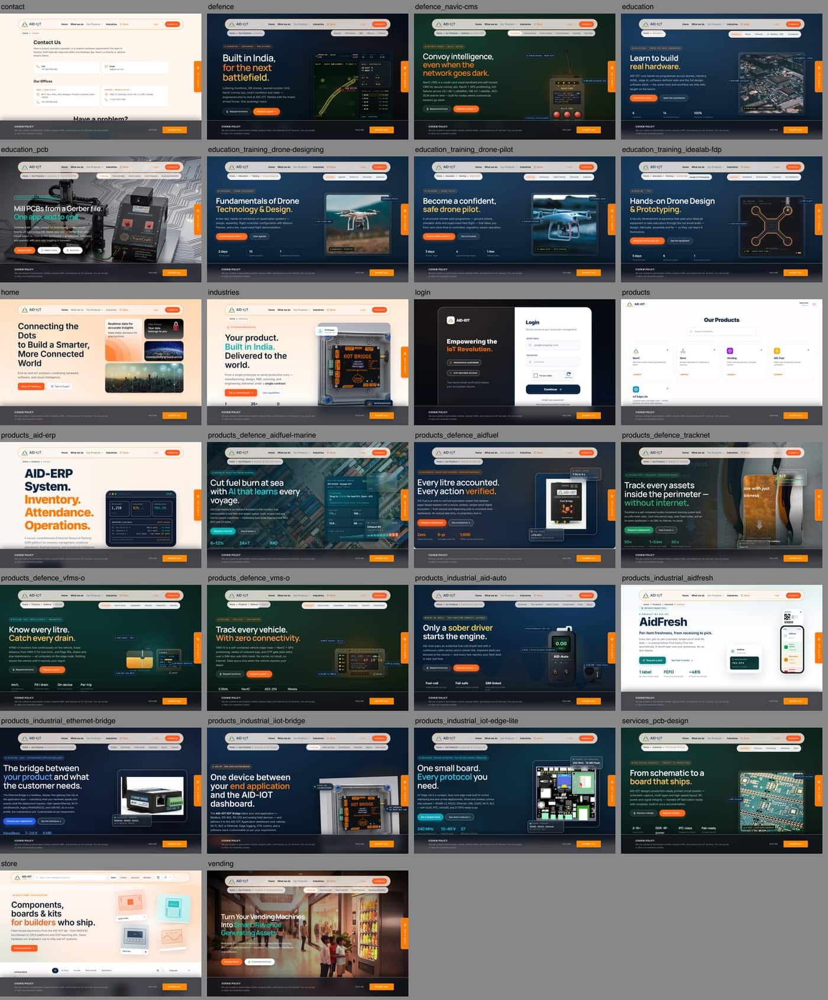
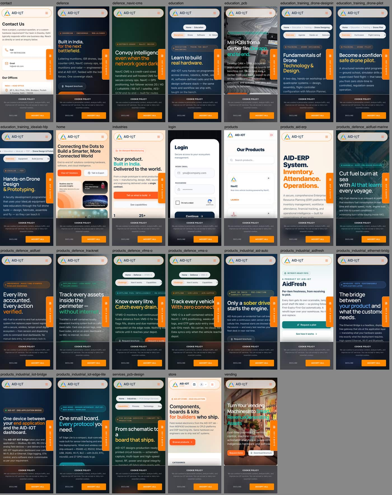
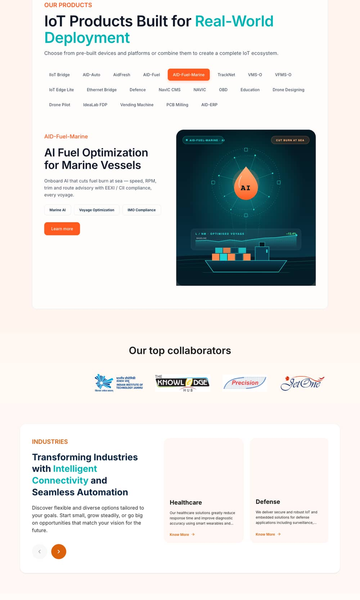
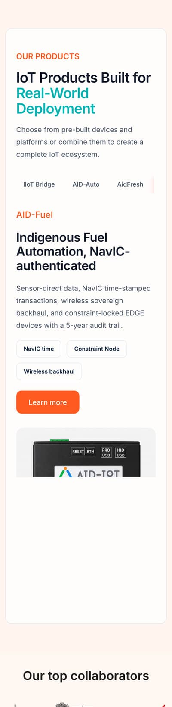
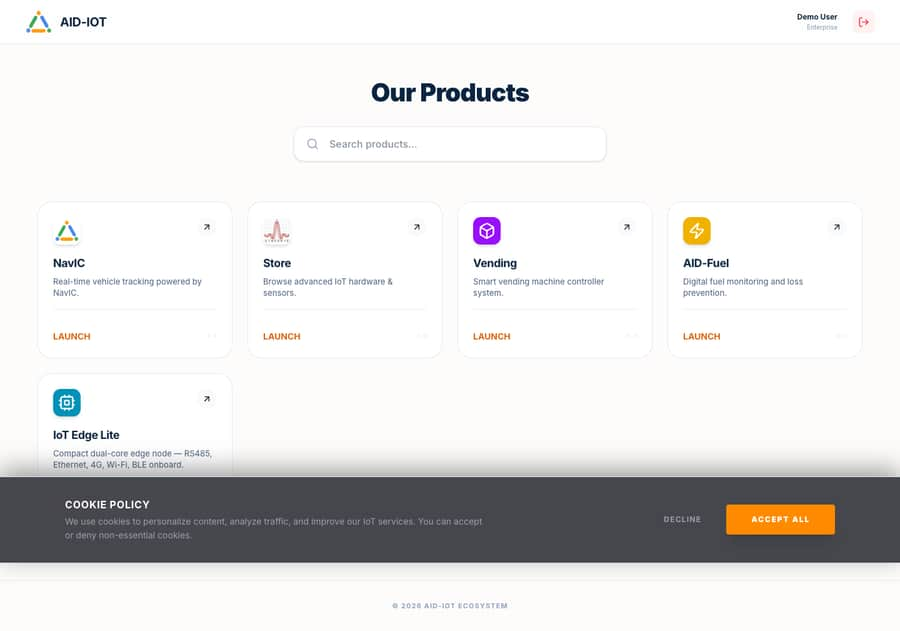
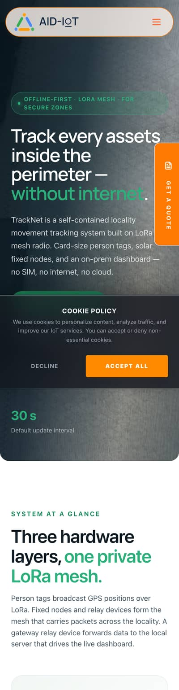

01Executive summary
The product pages are genuinely good. The front door is not. A CEO who lands on aid-iot.com today cannot tell within ten seconds what AID-IoT would do for their business, that AID-IoT writes the software as well as the hardware, or where to click next.
8 heuristics scored; Flexibility and Help marked n/a for a marketing surface.
Accessibility 1 · Performance 1 · Responsive 2 · Theming 1 · Integrity 2.
Counted once each even where they repeat across 24 marketing pages.
The five findings that matter most
- The homepage does not make the pitch. The headline (“Connecting the Dots to Build a Smarter, More Connected World”) is a slogan, not a claim; both hero buttons (“View IoT Solutions” and “Talk to Expert”) jump to the same contact form; the strongest proof the company has (Ministry of Defence, Indian Army, IIT Delhi, IIT Jammu, BigBasket) is hidden in a small logo marquee below the fold.
- There is no information architecture, only a list. “Our Products” is a flat strip of 21 chips mixing hardware (IIoT Bridge), sectors (Defence), courses (Drone Pilot) and software (AID-ERP). The nav item “Industries” points to a page about contract manufacturing, while the homepage “Industries” section is a carousel of Healthcare/Defence/Education. Footer lists do not match either. Nothing tells a visitor whether to think in terms of problems, sectors, products or services.
- The software half of the business is invisible. AID-IoT ships dashboards, an ERP, TraceCraft, a four-app fuel suite (FSMS/DEPOT/RAVEN/QUEST), convoy and vending software — but there is no “Software” or “Platform” anywhere in the navigation, and “Cloud & SaaS Platforms” is one of four equal-weight cartoon cards.
- Two websites are wearing one logo. The homepage is a warm-peach template with stock cartoon scientists and a 3D avatar; the product pages are dark, technical and photographic, and each picks its own accent (orange, teal, yellow, green). Four font families load. Every colour is hard-coded inline; there is no design system to scale.
- Mobile is actively hostile on first visit. A fixed “GET A QUOTE” tab overlaps the hero headline on every page at 390px, and the cookie banner takes ~30% of the viewport until dismissed. Together they cover roughly half of the first screen a phone visitor sees.
What to keep
- The product page template. Challenge → How we help → Architecture → Features → Specs → Use cases → Built for → CTA is a strong, repeatable narrative. It needs a business-outcome layer on top, not replacement.
- The device photography and system diagrams on the Defence, IIoT Bridge, Industries and Education pages. They are specific to AID-IoT in a way nothing on the homepage is.
- The proof points already written (“fielded with the Indian Army”, “5,000+ SKUs, zero stock variance”, “−12.4% fuel burn”) — currently buried three scrolls deep on individual pages.
- Next.js and the Store’s separate app shell. The stack is right; the theming and content model on top of it are not.
02What the site is today
Thirty-one live URLs, one navigation model that describes none of them, and a homepage that carries the weakest version of the story.
Site inventory
| Area | Live pages | Template / visual world | Reachable from primary nav? |
|---|---|---|---|
| Home | 1 | Warm-peach template, cartoon illustrations | Yes |
| Industrial products | 5 | IIoT Bridge, IoT Edge Lite, Ethernet Bridge, AID-Auto, AidFresh — dark navy hero (AidFresh: light mint) | Only via “Our Products → Industry” submenu or home chips |
| Defence | 7 | Defence hub, NavIC CMS, AID-Fuel, AID-Fuel-Marine, TrackNet, VMS-O, VFMS-O — black / dark green / olive heroes | Only via submenu |
| Software | 2 | AID-ERP (light, orange), TraceCraft (dark, filed under /education/pcb) | No — no “Software” in nav |
| Services | 2 | /industries (contract manufacturing), /services/pcb-design | “Industries” label — misleading |
| Education | 4 | Hub + 3 drone programmes | Submenu only |
| Vending | 1 | Photo hero, teal accent | Home chips only |
| Store | 1 | Separate app shell; 210 products on one page | Yes |
| Portal | 4 | /products (app launcher), /login, /register, /forgot-password | “Login”; /products is publicly visible |
| Legal & contact | 4 | Contact, Privacy, Terms, Shipping & Refund | Contact yes; rest footer |
Above the fold, every page, both viewports


Navigation model as it exists
- Home · What we do · Our Products ▾ · Industries · Store · Login · Contact Us — seven items, two of which (“What we do”, “Industries”) are anchors to homepage sections when on the homepage and go elsewhere on subpages.
- “Our Products” dropdown has three sub-menus: Education, Industry, Defence. Education is not a product; Industry is a sector; AID-ERP, Vending, TraceCraft and PCB Design fit in none of them.
- “Industries” leads to /industries, whose H1 is “Your product. Built in India. Delivered to the world.” — the contract-manufacturing offer. The homepage section with the same name is a carousel of Healthcare, Defence, Education and “Monitoring Solutions”, two of which have no page. Its card images (
MONITOR.svg,EDU.svg,healthx.svg) fail to render — the cards show as blank boxes. - Footer lists Industries: Defence, Industry 4.0, Healthcare, Education; Products: IoT Gateway, AID-Fuel, NAVIC, OBD, Vending Machine. “OBD” and “Healthcare” have no page; “NAVIC” and “NavIC CMS” are treated as different things.
- Product picker on home: 21 flat chips — IIoT Bridge, AID-Auto, AidFresh, AID-Fuel, AID-Fuel-Marine, TrackNet, VMS-O, VFMS-O, IoT Edge Lite, Ethernet Bridge, Defence, NavIC CMS, NAVIC, OBD, Education, Drone Designing, Drone Pilot, IdeaLab FDP, Vending Machine, PCB Milling, AID-ERP. On mobile the strip scrolls sideways and the selected product’s image leaves a ~700px empty area beneath it.



/products is the customer portal launcher — publicly visible, logged in as “Demo User · Enterprise”.03Heuristic evaluation
Scored against Nielsen’s ten heuristics on the impeccable 0–4 scale, in Persuade mode (the visitor’s success is deciding to get in touch). Two heuristics that do not apply to a marketing surface are marked n/a, so the maximum is 32.
| # | Heuristic | Score | Key evidence |
|---|---|---|---|
| 1 | Visibility of system status | 2 | Breadcrumbs and sticky section tabs on product pages are good. The nav never shows where you are (“Our Products” is not highlighted on product pages); carousels have no position indicator; the product picker gives no sense of “x of 21”. |
| 2 | Match between system and the real world | 1 | Entry-point copy is engineering vocabulary: Modbus, RS-485, MQTT, NavIC, FEFO, LoRa mesh, constraint node, sovereign backhaul. Product names are internal codes (VMS-O, VFMS-O, NavIC CMS) with no plain descriptor. “Industries” means two different things. |
| 3 | User control and freedom | 2 | Breadcrumbs exist. The fixed “GET A QUOTE” tab cannot be dismissed and covers content; the cookie banner blocks a third of mobile until acted on; the Store loads all 210 products with no way to page. |
| 4 | Consistency and standards | 1 | Two visual worlds; accent colour changes per page; three heading typefaces; ten different CTA labels for the same action (Request a quote · Request brochure · Brief us · Explore product · Learn more · Know More · Tell us what to build · Discuss your deployment · Request a pilot · Talk to Expert); nav, footer and chip lists disagree. |
| 5 | Error prevention | 2 | Contact form uses placeholder-only labels (disappear on typing), no inline validation, no required markers on the main form (the drawer form has them). Both hero CTAs go to #contact, so the “safe” exploratory click lands in a form. |
| 6 | Recognition rather than recall | 1 | The visitor must already know that “TrackNet” is people-tracking, “VFMS-O” is fuel, “AidFresh” is cold-chain. Nothing groups products by problem, sector or type. Nav labels require remembering that “Industries” is manufacturing. |
| 7 | Flexibility and efficiency | n/a | Persuade surface; the Store’s filters and search are adequate for the engineer persona. |
| 8 | Aesthetic and minimalist design | 2 | Product pages are disciplined. The homepage is generic: bento cards captioned “Realtime data for accurate insights”, “Connectivity around world”; four cartoon-scientist illustrations; a 3D avatar with a coffee cup introducing the contact form on a defence-supplier website. |
| 9 | Help users recognise, diagnose and recover from errors | 2 | A 404 page exists (“You’ve drifted into deep space”) — tonally wrong for the audience but functional. Form error states could not be observed; no success confirmation copy is visible in the markup. |
| 10 | Help and documentation | n/a | Persuade surface. (Note for later: datasheets/brochures are promised on several pages; /brochures/pcb-brochure.pdf returns 404.) |
| Total | 13 / 32 | Poor Bands used: 29–32 excellent · 23–28 good · 16–22 acceptable · 8–15 poor · 0–7 critical. |
Cognitive load checklist (homepage)
- Single focus — hero, three bento cards, a cityscape photo and a cookie banner compete in the first screen.
- Chunking — 21 product chips in one group; 7 nav items.
- Grouping — chips are not grouped; footer groups disagree with nav groups.
- Visual hierarchy — four “What we do” cards of equal weight; “Cloud & SaaS” (the software story) is the smallest.
- One thing at a time — sections do proceed in sequence.
- Minimal choices — 21 options at the product decision point; 7 in nav; 4 in each dropdown level.
- Working memory — visitor must remember what “Industries” meant on the last page.
- Progressive disclosure — specs and jargon are exposed at the same level as the pitch.
7 of 8 failed → high cognitive load. This is the measurable version of “everything is all over the place”.
Persona walkthroughs
Meera — CEO, cold-chain logistics (non-IT)
Arrives from a referral. Wants to know: can these people reduce my spoilage, and are they credible?
- Reads “Connecting the Dots…” — learns nothing about her problem.
- Clicks “View IoT Solutions” → lands on a blank contact form. Backs out.
- Sees 21 chips; “AidFresh” is chip 3 but nothing says “cold-chain” or “spoilage”.
- Never sees that BigBasket is a collaborator (it’s in a marquee below the carousel). Abandons at ~40 seconds.
Col. Arjun (retd.) — procurement lead, defence PSU
Needs: indigenous credentials, MoD track record, security posture, a named contact.
- Defence page is strong and speaks his language; “Fielded with Ministry of Defence · Indian Army” is one thin line.
- Looks for About / Certifications / Case studies — none exist.
- Hits the 404 “drifted into deep space” page from a footer link. Credibility dips.
- Fixed “GET A QUOTE” tab is the only path; no named engineering contact or programme office.
Sana — Head of Operations, manufacturing plant
Question: can you connect my PLCs to a dashboard, how long, roughly what does it cost?
- Nav “Industries” takes her to contract manufacturing — wrong.
- IIoT Bridge page answers her question well, but only if she finds chip #1.
- No engagement model, timeline or pricing band anywhere on the site.
- Contact form asks for “Subject” with no hint of what a good subject is.
Dev — embedded engineer evaluating hardware
Wants pin-outs, protocols, datasheets, a dev board to buy.
- Best-served persona: spec tables, protocol lists, Store.
- Store: 210 products render at once (4,446 DOM nodes); mobile page is 116,813px tall.
- Brochure PDF link 404s; no datasheet downloads.
- Contrast on orange labels (3.1:1) makes spec eyebrows hard to read.
04Priority issues
P0 blocks the site’s purpose. P1 must be fixed before a relaunch. P2 is the next pass. P3 is polish. Each carries the impeccable command that would address it in a build.
P0 — blocking
The homepage does not say what AID-IoT does for a buyer
/ hero, “What we do”, product picker
Why it mattersExecutives decide in the first screen whether to keep reading. The hero is a slogan; the sub-line (“End-to-end IoT solutions combining hardware, software, and cloud intelligence”) is the actual pitch but is set as body copy. Both CTAs go to #contact, so exploration is punished.
Lead with a claim + proof: “We design the device, write the software and run the cloud — so your operation gets one accountable partner. Fielded with the Indian Army, IIT Delhi and BigBasket.” Primary CTA “See how we work”, secondary “Talk to an engineer”. Put the logo strip directly under the hero.
Command/impeccable shape then /impeccable clarify
No information architecture — product list instead of a model
Nav, “Our Products” dropdown, 21-chip picker, footer
Why it mattersVisitors cannot map their problem to a page. The same word (“Industries”) means two things; software is unfindable; sectors, products, courses and services share one list.
FixAdopt the five-item model in §08: Solutions · Products · Software · Services · Company, with Store and Login as utilities. Every page belongs to exactly one branch; footer mirrors the nav.
Command/impeccable shape
Customer portal is publicly exposed at /products
/products — app launcher showing “Demo User · Enterprise”, Launch buttons for NavIC, Vending, AID-Fuel
Why it mattersLooks like a leaked internal tool; confuses the “Products” concept; robots.txt already tries to hide it, which confirms it was not meant to be public.
FixMove the launcher behind authentication at /app or /portal; free the /products URL for the marketing catalogue.
/impeccable harden
Mobile first screen is covered by two fixed elements
All pages at ≤ 430px: fixed “GET A QUOTE” tab (right edge, ~60% down) + cookie banner (bottom third)
Why it mattersThe tab sits on top of the headline on 20+ pages and clips it on at least four. With the banner, ~50% of the first viewport is chrome. Half of B2B traffic from India is mobile.
FixRemove the tab on mobile (the header CTA already exists); collapse the cookie notice to a single 56px bar with “Accept · Manage”; remember the choice.
Command/impeccable adapt

P1 — fix before relaunch
Software is invisible as an offer
Site-wide
Why it mattersYour stated differentiator — “not just a hardware company” — has no page, no nav item and no proof. AID-ERP, TraceCraft, the AID-IoT dashboard, FSMS/DEPOT/RAVEN/QUEST, NavIC CMS software and the vending cloud exist only inside hardware pages.
FixA top-level Software branch with a platform overview (“one dashboard for every device we ship”), individual product pages and real screenshots; a “Hardware + Software + Cloud” diagram on the homepage.
Command/impeccable shape
Two visual worlds, no design system
Home/Contact/ERP/AidFresh (light, cartoon) vs every other page (dark, photographic); accents per page: #FF5A1F, #00B4B4, #FFB020, green
Why it mattersBrand recognition resets on every click. Every colour is an inline style="" or Tailwind arbitrary value; four font families (Inter, Manrope, JetBrains Mono, Lucide) load inconsistently. Nothing can be changed globally.
One token set (§09), one type pairing, one accent; dark used only for “instrument” moments (device UI, diagrams, spec strips), not as a per-page theme.
Command/impeccable document → /impeccable extract
Brand colours fail contrast on text
Orange #FF5A1F on white = 3.1:1; #DB620A on #FFF1E6 = 3.3:1; teal #00B4B4 on white = 2.6:1; yellow #FFB020 on white = 1.8:1
Why it mattersWCAG 1.4.3 requires 4.5:1 for text. axe flagged 411 nodes on Store, 77 on Education, 69 on IIoT Bridge, 17 on Home. Every eyebrow label, chip and accent headline is affected.
FixUse a darker orange for text on light (#B4400E = 5.7:1) and keep the bright orange for fills and large display only; drop teal as a text colour.
Command/impeccable colorize
Page weight 7–8 MB on the two most-visited pages
Home 7.6 MB / 68 requests; /industries 7.8 MB; Store 6.6 MB; Vending 3.9 MB
Why it mattersHero images are served at 2880×1920 and 3072×1658 and displayed at 280×143 and 560×211 — 10× oversized. Load took 8–11 s on a fast connection in testing. LCP on a 4G phone will be well over 4 s.
FixServe responsive sizes via next/image with real sizes, convert to AVIF/WebP, budget 1.5 MB per page, preload only the LCP image.
/impeccable optimize
Store renders the whole catalogue in one page
/store — 210 product cards, 4,446 DOM nodes, 465 interactive targets, 38,491px tall on desktop, 116,813px on mobile
Why it mattersScrolling and filtering stutter; screen readers announce 210 headings; the page is un-navigable on a phone.
FixPaginate or virtualise at 24 per page; category landing pages; sort <select> needs an accessible name.
/impeccable optimize + /impeccable layout
Entry-point copy is written for engineers
Home, section hubs, every hero sub-line
Why it mattersSee §07. A CXO cannot evaluate “constraint-locked EDGE devices with a 5-year audit trail” but can evaluate “every litre of fuel accounted for, with a record that stands up in an audit”.
FixThree-layer copy model: outcome (hero) → how it works (plain) → specification (engineers). Rewrite all heroes and hub intros; keep spec tables.
Command/impeccable clarify
Proof is buried; company has no About, case studies or credentials page
Logo marquee below industries carousel; “Fielded with MoD / Indian Army” one-liner on /defence; metrics scattered on product pages
Why it mattersExecutives buy on trust. The site has excellent proof (MoD, Indian Army, IIT Delhi, IIT Jammu, BigBasket, KHub, JetOne, Precision; Delhi + Canada offices) and no place to put it.
FixCompany branch: About, Why AID-IoT (indigenous, MoD-fielded, IIT-partnered), Case studies (3 to launch), Partners, Contact. Logo strip under the homepage hero.
Command/impeccable shape
Broken and dead links in primary surfaces
Homepage industries carousel images (0×0, blank cards); footer “OBD”, “Healthcare”, “IoT Gateway”, “NAVIC” (no pages or ambiguous); /brochures/pcb-brochure.pdf 404; /about, /careers, /blog 404
Blank cards and 404s on the homepage read as an abandoned site.
FixFix asset paths; regenerate footer from the new sitemap; add real PDFs or remove the links.
Command/impeccable harden
Keyboard and screen-reader basics are missing
Site-wide: no skip link; no :focus-visible styles except Store; carousel arrows are unnamed <button>s; <main> landmark missing on most product pages (axe “region” up to 124 nodes); heading levels skip (h1 → h3, h4 in cookie banner); form inputs labelled by placeholder only
WCAG 2.4.1, 2.4.7, 4.1.2, 1.3.1, 3.3.2. Also a procurement checkbox in government tenders.
FixLayout component with skip link + landmarks; global focus ring; visible labels on every input; name every icon button.
Command/impeccable harden
Product names carry no meaning
VMS-O, VFMS-O, NavIC CMS, TrackNet, AidFresh, AID-Auto, IIoT Bridge, IoT Edge Lite
Why it mattersA chip that says “VFMS-O” asks the visitor to already be a customer.
FixName + descriptor everywhere they appear as a choice: “VFMS-O — offline fuel monitoring for vehicle fleets”. Group by problem in the catalogue.
Command/impeccable clarify
Ten CTA labels for one action
Request a quote · Request brochure · Brief us · Explore product · Learn more · Know More · Tell us what to build · Discuss your deployment · Request a pilot · Talk to Expert · Send Message · Submit Request
Why it mattersEach new label is a new decision. The visitor cannot predict what happens.
FixThree verbs only: Talk to an engineer (primary, everywhere), See how it works (in-page), Download datasheet (when a real file exists).
Command/impeccable clarify
P2 — next pass
| Issue | Where | Fix | |
|---|---|---|---|
| P2 | Cartoon scientists and a 3D avatar with coffee introduce a defence supplier | Home “What we do”, every “Have a problem?” contact block | Replace with device photography, dashboard screenshots and one diagram style (§09) |
| P2 | Contact page repeats phone/email three times and shows two forms | /contact | One form, one office block, one “what happens next” note |
| P2 | Text at 7–10px | Spec eyebrows, chips, footer; AidFresh and Industries hit 7px on mobile | Minimum 12px for labels, 14px for body on mobile |
| P2 | 20–37 tap targets under 44px on every page | Chips, section tabs, breadcrumb links, footer | Min 44×44 touch area; tabs become a select on mobile |
| P2 | Product-page section tabs overflow and are clipped on mobile | All product pages (“Challenge · How we help · Capabilities …”) | Scrollable with fade + snap, or an in-page “Jump to” menu |
| P2 | Copy bugs | “Track every assets” (TrackNet); raw don’t rendered on /education; Terms numbering jumps 2→4→7→8→9→11 with mixed casing; Industries stat “0 Third parties in the middle” reads as a zero | Copy QA pass; fix the escaping bug in the content source |
| P2 | No prefers-reduced-motion handling (except /industries); 66–451 animated elements per page | Site-wide | Global reduced-motion rule preserving state changes |
| P2 | 404 tone (“You’ve drifted into deep space”) and a full quote form on the error page | /404 | Plain 404 with search and the five branch links |
| P2 | Collaborator logos are mixed raster/vector, low-res, uneven sizes | Home marquee | Monochrome SVG set, one cap-height, permission confirmed |
| P2 | “What we do” card copy mismatches its title (“IoT Hardware Design” describes integration) | Home | Rewrite the four capability cards as one “how we build” story |
| P2 | No engagement model, timeline or pricing guidance anywhere | Site-wide | “How we work” page: discovery → pilot → deployment, with typical durations |
P3 — polish
- P3 Newsletter block in the footer has more visual weight than the contact details; demote it.
- P3 Logo SVG loaded at 106×96 and displayed at 48×44 on every page; ship the right size.
- P3 Footer tagline repeats the hero slogan; use the one-line positioning instead.
- P3 Store hero says “2026 collection” — dated copy in a permanent hero.
- P3 Page titles are 44–78 characters; several exceed the 60-character SERP cut.
- P3 Login page header differs from the main header; unify.
05Technical audit
The impeccable audit’s five dimensions, scored 0–4 from measured data: axe-core 4.10 (WCAG 2.x A/AA + best-practice), Performance API timings, computed-style scans and a keyboard walk on ten representative pages at both viewports.
| # | Dimension | Score | Key finding |
|---|---|---|---|
| 1 | Accessibility | 1 | Contrast failures on every page (up to 411 nodes); no skip link; no focus styles; unnamed buttons/select; missing landmarks; placeholder-only labels. |
| 2 | Performance | 1 | 7.6–7.8 MB pages; 10× oversized hero images; Store with 4,446 nodes; 28–31 script chunks per page. |
| 3 | Responsive design | 2 | No horizontal overflow (good); fixed tab overlaps content; 20–37 sub-44px targets per page; 7–10px text; clipped tab strips. |
| 4 | Theming | 1 | No tokens; hard-coded hex in inline styles and Tailwind arbitrary values; per-page palettes; no dark/light system (dark is a page choice, not a theme). |
| 5 | Implementation integrity | 2 | Product template is coherent and product-specific; homepage is template-generic; blank carousel images; escape bug; typos; duplicate “Supported Peripherals” list on AID-ERP. |
| Total | 7 / 20 | Poor — major overhaul |
Measured page data (desktop unless noted)
| Page | Transfer | Requests | DOM nodes | axe contrast | axe other | Focus styles | Reduced motion |
|---|---|---|---|---|---|---|---|
| / | 7.6 MB | 68 | 485 | 17 | button-name ×2, heading-order, region | No | No |
| /industries | 7.8 MB | 72 | 1,048 | 27 | heading-order ×2, region ×65 | No | Yes |
| /store | 6.6 MB | 41 | 4,446 | 411 | select-name, heading-order, region ×11 | Yes | No |
| /vending | 3.9 MB | 70 | 644 | 16 | heading-order, region | No | No |
| /products/industrial/iiot-bridge | 3.4 MB | 67 | 924 | 69 | heading-order, region ×49 | No | No |
| /education | 2.0 MB | 72 | 1,161 | 77 | scrollable-region-focusable, region ×124 | No | No |
| /defence | 1.5 MB | 67 | 1,864 | 36 | heading-order, region ×88 | No | No |
| /products/aid-erp | 1.4 MB | 66 | 758 | 20 | heading-order, region | No | No |
| /contact | 1.4 MB | 66 | 424 | 17 | heading-order, region | No | No |
Notable specifics
- Images:
aid-iot-world-connectivity.jpg2880×1920 shown at 280×143;aid-iot-smart-iot.jpg3072×1658 shown at 560×211;iiot-bridge.png1299×1211 loaded twice on /industries. Product images on /industries are 1024×1536 PNGs shown at 264×198. Logo SVG at 106×96 for a 48px slot. - Fonts: Inter (100–900 variable) on every page; Manrope on Industries/Education/Defence heroes; JetBrains Mono + Lucide font in the Store; the Store also re-declares Inter at six static weights. Two display faces plus a mismatched fallback stack (
'inter'lowercase appears as a family name). - Styling model: Tailwind arbitrary values (
text-[#00B4B4],rounded-[20px]) and long inlinestyle=""strings coexist; the Industries page declares CSS variables (var(--hair)) that other pages do not share. Effectively three CSS systems. - Landmarks:
<main>present on Home, Contact, Store; absent on IIoT Bridge, Industries and most product pages. No<nav aria-label>distinctions between primary nav, breadcrumb and section tabs. - Keyboard walk: Tab order is logical; focus is visible only through the browser default 1–3px auto outline, which the orange-on-peach header nearly hides. Cookie banner buttons are not the first focusable elements, so keyboard users must tab through the nav before dismissing it.
- Head/SEO: Titles and descriptions exist on all pages (good). Sitemap lists 13 URLs; 18 live pages are missing from it (Vending, Education, all training pages, PCB Design, VMS-O, VFMS-O, ERP is present, Store absent).
langattribute missing on /aidfresh. - Third-party: reCAPTCHA v2 (“I’m not a robot”) on login — six iframes load on most pages for analytics/captcha before any interaction.
Positive findings to keep
- Zero cumulative layout shift measured on every page — the layout is stable once loaded.
- No horizontal overflow at 390px on any page.
- All images carry alt text (some decorative ones over-describe, but nothing is missing).
- Breadcrumbs with correct hierarchy on every subpage.
- Sticky section tabs on product pages track the visitor’s position — a good pattern to standardise.
06Responsive findings — desktop and mobile together
You asked to solve both at once. The good news: the layouts reflow; nothing overflows. The problems are chrome, density and touch — all fixable in one component pass.
| Finding | Desktop 1440 | Mobile 390 | Fix once, in the component |
|---|---|---|---|
| Fixed “GET A QUOTE” tab | Sits over hero imagery on 20 pages; on Defence it covers the map screenshot | Overlaps or clips headlines on every page | Remove; the header CTA and end-of-page CTA already exist. If a persistent CTA is wanted, use a bottom bar on mobile only, 56px, appearing after 50% scroll. |
| Cookie banner | Full-width band, 110px, covers section headings while scrolling | ~250px, ~30% of viewport | Single-line bar, no heading, “Accept · Manage”; persist choice; give it first focus. |
| Product-page section tabs | Fit in one row | Overflow, cut mid-word, no scroll affordance | Horizontal scroll with edge fade and scroll-snap; or “On this page” dropdown under 640px. |
| Product picker chips | Three rows of 21 | Sideways strip, cut at edge; 700px empty area under selection | Replace with grouped catalogue cards (§08); fix image aspect ratio. |
| Hero image cards (home) | Bento of 3 small cards + photo; captions at 12px | Stack; cityscape photo cropped to 190px band | One image, one claim; drop the caption cards. |
| “What we do” cards | 2×2 with unequal widths; illustration ~50% of card | Each card ~900px tall (illustration below text) | Compact capability rows with a small icon; one shared diagram instead of four illustrations. |
| Touch targets < 44px | 28–37 per page (chips, tabs, footer links) | 20–37 per page; Store 460 | Min height 44px on chips/tabs; 12px vertical padding on footer links. |
| Smallest text | 7–10px (eyebrows, spec labels, chips) | Same values — not scaled | Type scale floor: 12px labels, 15px body on mobile. |
| Contact block on every page | 3D avatar + form, ~900px | Avatar + form, ~1,400px | Compact CTA band with “Talk to an engineer”; full form only on /contact. |
| Store catalogue | 38,491px page | 116,813px page; category list of 20 above the products | Paginate; collapsible filters; sticky “Filter” button on mobile. |
| Header | Pill header with 7 items; “Store” in orange competes with the CTA | Hamburger; menu is a centred list with no product access without an extra tap | Five items + two utilities; mobile menu lists branches with their top children visible. |
07Content & copy for a non-technical executive
The site is written by engineers for engineers — which is exactly right one level down, and exactly wrong at the entrance. The fix is not to remove the engineering; it is to put an outcome layer above it.
What the copy currently does
- Slogans where claims should be. “Connecting the Dots to Build a Smarter, More Connected World”, “Transforming Industries with Intelligent Connectivity and Seamless Automation”, “Empowering the IoT Revolution”. None is falsifiable, so none is persuasive.
- Jargon at the door. Homepage and hub pages use: IoT, IIoT, Industry 4.0, AIoT, embedded, firmware, SaaS, OTA, FEFO, NavIC, LoRa, Modbus, RS-485, RS-232, MQTT, SCADA, PLC, VFD, PID, edge, telemetry, sovereign backhaul, constraint node, air-gapped, AES-256, AIS-140, MIL-STD, GRBL, Gerber, CPLD, DSP. A CEO recognises perhaps five.
- Features without consequences. “Sensor-direct, cryptographically signed, command-ready.” The reader must infer why that matters. The Marine page does it right: “Cut fuel burn at sea” is an outcome.
- Category copy on the homepage, specific copy on subpages. The homepage services cards could belong to any IoT vendor (“seamless integration with existing systems”). The IIoT Bridge page could belong only to AID-IoT.
- Tone swings. Warm and playful on home (“Have a problem?”, coffee avatar), martial on Defence (“for the next battlefield”), quirky on 404 (“drifted into deep space”). An executive reads this as three companies.
Writing principles for the rebuild
- Three layers on every page. Layer 1 (hero, 30 words): the outcome, for whom, and proof. Layer 2 (“how it works”, 150 words): plain-language mechanism with one diagram. Layer 3 (specs, tables): the engineering, untouched.
- Outcome verbs, business nouns. Cut, account for, prove, track, keep running, never lose. Fuel, stock, vehicles, spoilage, downtime, audit.
- Define or defer. Any term not in a business dictionary is either explained inline once (“NavIC — India’s own satellite positioning system”) or moved to layer 3.
- Say who it is for in the first sentence. “For fleet operators…”, “For plants running PLCs…”, “For defence programmes that cannot depend on public networks…”.
- One voice. Confident, plain, specific, calm. No exclamation marks, no space jokes, no “revolution”.
- Numbers over adjectives. “5,000 SKUs, zero stock variance” beats “comprehensive”. Every page gets at least one real number.
- Name the next step. A CTA says what happens: “Talk to an engineer — a 30-minute call, no sales deck.”
Before / after
Connecting the Dots to Build a Smarter, More Connected World. End-to-end IoT solutions combining hardware, software, and cloud intelligence.
We build the devices, the software and the cloud behind connected operations — as one accountable partner.
Indian-designed hardware and software, fielded with the Indian Army, IIT Delhi and BigBasket. From a single sensor to a nationwide fleet.
Embedded Systems · IoT Hardware Design · Cloud & SaaS Platforms · Data, Analytics & Automation
Buy a proven device. Gateways, trackers and controllers that are already in the field.
Have us build your solution. We design the hardware, write the software, run the cloud and manufacture in India.
Run on our software. Dashboards, ERP and fleet apps that work with our devices — or yours.
Every litre accounted. Every action verified. AID-Fuel is an end-to-end fuel automation system that replaces paper-based registers with a secure, wireless, tamper-proof digital ecosystem…
Every litre of fuel accounted for — with a record that holds up in an audit.
For depots and fleets that still run on paper registers. Sensors record each transaction automatically, stamp it with satellite time, and keep it for five years. Nothing leaves your network.
VFMS-O — Offline Vehicle Fuel Monitoring System. Know every litre. Catch every drain.
VFMS-O · Fuel monitoring for vehicles with no network
Detects fills and drains on the vehicle; syncs when it reaches the depot. No SIM, no cloud.
Have a problem? We design, deploy, and scale the solution. [Name] [Company] [Email] [Phone] [Subject] [How can we help you?] Send Message
Talk to an engineer. Tell us what you operate and what is going wrong. You’ll hear from an engineer — not a sales desk — within one business day.
Name · Work email · Company · What are you trying to solve? (optional: phone)
[Send] — “We’ll reply within one business day. No newsletter.”
Jargon glossary to enforce
| Term used now | Layer 1–2 replacement | Keep in layer 3? |
|---|---|---|
| IoT / IIoT / AIoT / Industry 4.0 | “connected devices”, “connected operations”, “connected factory” | Yes (IIoT only) |
| Edge device / edge logging | “works on-site even when the internet is down” | Yes |
| NavIC | “India’s own satellite positioning system (NavIC)” — once per page | Yes |
| FEFO | “first-to-expire is picked first” | Yes |
| LoRa mesh / sub-GHz mesh | “a private radio network that needs no SIM or internet” | Yes |
| Modbus / RS-485 / MQTT / SCADA / PLC | “the machines and control systems you already have” | Yes |
| Sovereign backhaul / air-gapped / constraint node | “your data never leaves your network” | Yes |
| OTA | “updated remotely” | Yes |
| AES-256 / AIS-140 / MIL-STD | “bank-grade encryption”, “meets Indian vehicle-tracking and military standards” | Yes |
| Telemetry | “live readings” | Yes |
08Proposed information architecture
Five branches that answer the executive’s four questions, with the engineering catalogue one click deeper. Every current page has a home; nothing is lost.
Navigation model
| Primary nav | Answers | Contains |
|---|---|---|
| Solutions | “Do you solve my problem?” | By sector: Manufacturing & plants · Fleet & fuel · Defence & secure sites · Cold-chain & retail · Smart vending · Education & skills. Each sector page: problem → what we deploy (products + software) → proof → CTA. |
| Products | “What can I buy today?” | Hardware catalogue grouped by job: Gateways & edge (IIoT Bridge, Ethernet Bridge, IoT Edge Lite) · Fleet & fuel (AID-Fuel, AID-Fuel-Marine, VMS-O, VFMS-O, AID-Auto) · Tracking & convoy (TrackNet, NavIC CMS) · Freshness & retail (AidFresh, Vending controller) · Defence systems (link to Defence hub). |
| Software | “Do you do the software too?” | Platform overview (AID-IoT Dashboard/Cloud) · AID-ERP · TraceCraft · Fuel suite (FSMS, DEPOT, RAVEN, QUEST) · Convoy & fleet apps · Vending cloud · Custom software. |
| Services | “Will you build it for us?” | End-to-end product development (how we work: discovery → pilot → deployment) · PCB design · On-demand manufacturing (today’s /industries) · Training & education (today’s /education). |
| Company | “Can I trust you?” | About · Why AID-IoT (indigenous, MoD-fielded, IIT partnerships) · Case studies · Partners · Careers · Contact. |
| Utilities | Store (separate app shell) · Log in (portal) · Talk to an engineer (primary button). |
Sitemap
flowchart TD H[Home] H --> S[Solutions] H --> P[Products] H --> SW[Software] H --> SV[Services] H --> C[Company] H -.-> ST[Store app] H -.-> LG[Log in → portal /app] S --> S1[Manufacturing & plants] S --> S2[Fleet & fuel] S --> S3[Defence & secure sites] S --> S4[Cold-chain & retail] S --> S5[Smart vending] S --> S6[Education & skills] P --> P1[Gateways & edge
IIoT Bridge · Ethernet Bridge · IoT Edge Lite] P --> P2[Fleet & fuel
AID-Fuel · Marine · VMS-O · VFMS-O · AID-Auto] P --> P3[Tracking & convoy
TrackNet · NavIC CMS] P --> P4[Freshness & retail
AidFresh · Vending controller] P --> P5[Defence systems
drones · counter-UAS · radar · munitions] SW --> W1[AID-IoT platform & dashboard] SW --> W2[AID-ERP] SW --> W3[TraceCraft] SW --> W4[Fuel suite
FSMS · DEPOT · RAVEN · QUEST] SW --> W5[Custom software] SV --> V1[Product development
how we work] SV --> V2[PCB design] SV --> V3[On-demand manufacturing] SV --> V4[Training
Drone design · Drone pilot · IdeaLab FDP] C --> C1[About] C --> C2[Why AID-IoT] C --> C3[Case studies] C --> C4[Contact]
Page templates (ten, designed desktop + mobile together)
| Template | Used by | Section sequence |
|---|---|---|
| Home | / | Claim + proof logos → Three ways to work with us → Solutions by sector (6 tiles) → How we build (hardware + firmware + cloud + apps + manufacturing diagram) → Featured case study with numbers → Products snapshot (grouped) → Software strip → Talk to an engineer |
| Solution (sector) | 6 pages | Outcome hero → The problem in your world → What we deploy (products + software cards) → How it works (one diagram) → Proof → Related services → CTA |
| Product (hardware) | ~14 pages | Keep the current arc, add layer 1: Outcome hero + spec strip → Who it’s for → Challenge → How we help → Architecture → Features → Specs → Use cases → Software it runs with → Datasheet + CTA |
| Software product | ~6 pages | Outcome hero with real screenshot → Who uses it → Modules → Works with (devices) → Security & hosting (self-hosted/cloud) → Proof → CTA |
| Service | 4 pages | Promise → How we work (steps with typical durations) → What you get → Capabilities → Work we’ve shipped → CTA |
| Hub (branch index) | Solutions, Products, Software, Services | One-paragraph framing → grouped cards with name + descriptor → cross-links |
| Case study | 3 to launch | Client + sector + numbers → Situation → What we built (hardware/software/cloud) → Result → Quote → Related |
| Company | About, Why, Partners | Story → Credentials (MoD, IIT, indigenous) → Offices → Team → CTA |
| Contact | /contact | Form with visible labels → What happens next → Offices → Direct lines |
| Legal / utility | Privacy, Terms, Shipping, 404 | Reading template; 404 with branch links and search |
URL plan and redirects
| Current | New | Note |
|---|---|---|
| /products (portal) | /app | Behind auth; 301 for logged-in users only, else to /products catalogue |
| /products/industrial/* | /products/<slug> | Flatten; group in the hub, not the URL |
| /products/defence/*, /defence/navic-cms | /products/<slug> | Same |
| /defence | /solutions/defence | Hub keeps its content |
| /industries | /services/manufacturing | Rename to what it is |
| /services/pcb-design | /services/pcb-design | Unchanged |
| /education, /education/training/* | /services/training, /services/training/<slug> | |
| /education/pcb (TraceCraft) | /software/tracecraft | It is a software product |
| /products/aid-erp | /software/aid-erp | |
| /vending | /solutions/vending + /products/vending-controller | Split pitch from device |
| /store | /store | Unchanged; separate shell |
| — (new) | /solutions/*, /software, /company/*, /case-studies/* | Add to sitemap.xml |
09Brand & visual language
What exists is not a brand but two moods. The proposal keeps what is recognisable — the tri-colour mark and orange — and gives it a system that scales across sixty pages, a store and a portal.
Current state
#FF5A1FText on white 3.1:1 — fails AA#DB620ASecond orange, used interchangeably#00B4B4Headline accent, 2.6:1 — fails#FFB020Defence/Education accent, 1.8:1#FFE8D8Homepage ground#020817Product-page ground#0B2540Store/Industries headings#1F5F3ATrackNet/VMS-O ground- Logo: the triangle mark in blue/green/orange is distinctive and worth keeping. The wordmark “AID-IoT” with a stylised “o” is fine at header size; the “IoT” legibility drops below 24px.
- Type: Inter everywhere, Manrope on some heroes, JetBrains Mono in the Store. Headline sizes vary from 34px to 72px with no scale.
- Imagery: four styles at once — stock cityscape photo, flat cartoon scientists, a 3D avatar, and (the good one) real device photography with UI overlays plus dark technical diagrams.
- Shape language: pill header, 10–20px radii, cards on everything including the entire homepage sections.
Direction: “Precision, plainly.”
AID-IoT’s real character is the thing already visible on its best pages: engineered objects photographed honestly, systems explained with diagrams, numbers stated without adjectives. The brand should look like a well-made instrument panel that a non-engineer can read. One visual world, in which light is the reading and selling surface and dark is reserved for instruments — device UIs, diagrams, spec strips, dashboard screenshots — so dark panels signal “this is the technology” rather than “this is a different page”.
Palette (AA-tested)
#0B1F3AText on light 16.5:1 · instrument ground#E8541CFills, large display, on navy 4.5:1#B4400EOrange as text on white 5.7:1#F3F4F6Page background, cool-neutral#FFFFFFCards, tables#5B6573Secondary text 5.9:1#9FB3C8Labels on navy 7.7:1#1F7A6DSemantic only — never decoration- One accent. Orange only. Teal, yellow and green leave the brand palette; green survives only as a semantic “online/OK” status in instrument panels.
- Two oranges, by role. Signal orange for buttons and large numerals; orange ink for links, eyebrows and small text. Never bright orange text on a light ground.
- Sector tinting, if wanted, comes from photography and diagram content, not from changing the accent per page.
Typography
Every litre of fuel accounted for.
One family for everything, set at three weights — the discipline is in the scale, not the font count. Body 17px/1.6 on desktop, 16px/1.55 on mobile; headline scale 1.25 ratio from 16 → 20 → 25 → 31 → 39 → 49 → 61.
SPEC · 12–24 V DC · RS-485 ×2 · 4G/2G · −20 to 60 °C — monospace for anything that is data
- Recommendation: Geist for headings and body (ships with
next/font, free, a clean grotesque with an engineering feel and excellent numerals) and Geist Mono for spec strips, tables and labels. This replaces Inter + Manrope + JetBrains Mono with one pairing that already fits the stack. If a warmer voice is wanted, Instrument Sans + IBM Plex Mono is the alternative; do not use two display faces. - Floor: 12px for labels, 14px for captions, 16px for body on mobile. Eyebrow labels in mono, uppercase, +0.08em tracking, never below 12px.
- Headlines: sentence case, tight tracking (−0.02em),
text-wrap: balance, maximum 12 words.
Imagery and illustration
- Photography: real AID-IoT devices on neutral sweeps, and in situ (panel rooms, vehicles, depots, campuses). Stock cityscapes, cartoon scientists and 3D avatars are retired.
- Diagrams: one style — navy ground, 1.5px strokes, orange for the AID-IoT component, muted grey for the customer’s existing equipment, mono labels. This is the “how it works” visual on every page and the strongest way to explain hardware + software + cloud to a non-engineer.
- Software screenshots: real dashboards in a consistent device frame; annotated with two or three callouts maximum.
- Icons: Lucide (already used), single weight, 20px in cards, 24px in navigation. No emoji, no gradient icons.
- Proof logos: monochrome navy SVG set at one cap-height.
Layout and components
- 12-column grid, 1200px max, 24px gutters; 8px spacing scale; section rhythm 96px desktop / 64px mobile.
- Cards are for things you can choose between (products, sectors, case studies). Sections are not cards. Radius 8px; shadow only on hover/interactive.
- Instrument panel component: navy surface with mono labels, used for spec strips, live-status mockups and diagrams.
- Button hierarchy: one primary (signal orange, white text), one secondary (navy outline), text links in orange ink. Every button ≥ 44px tall.
- Header: logo · Solutions · Products · Software · Services · Company · [Store] [Log in] [Talk to an engineer]. Mega-menus show child pages with descriptors, not just names.
- Tokens live in one
theme.css(CSS variables) consumed by Tailwind’s theme; no inline hex, no arbitrary values.
Voice
Plain, specific, calm, Indian-made and proud of it without slogans. The brand sounds like the engineer who built the thing explaining it to a client they respect.
10Build plan in phases
Six phases; the first one ships fixes to the live site inside two weeks while the rebuild is scoped. Desktop and mobile are designed and reviewed together at every step — no separate “mobile pass”.
Fix the P0s and the cheap P1s without redesigning
- Point “View IoT Solutions” at the products section; keep “Talk to Expert” on contact.
- Hide the “GET A QUOTE” tab below 768px; shrink the cookie banner to one line and persist the choice.
- Put
/productslauncher behind auth; redirect anonymous traffic to home. - Fix carousel image paths; fix footer links (remove OBD/Healthcare, point NAVIC at NavIC CMS); remove the dead brochure link.
- Serve hero images at display size (next/image sizes + AVIF); expect −5 MB on home.
- Change orange text colour to #B4400E and teal headline text to navy; add global focus ring and skip link; name the carousel buttons; add
<main>in the layout. - Copy QA: “every assets”,
’, Terms numbering, Industries “0” stat.
Decide what the site says before deciding how it looks
- Positioning workshop: one-sentence claim, three proof points, the “three ways to work with us” model.
- Validate the IA in §08 with 6–8 people who match the personas: a 20-minute tree test (“where would you find fuel monitoring for trucks?”). Adjust labels before design.
- Content inventory → content model (fields for Product, Software, Solution, Service, Case study, Person, Partner).
- Copy deck: every hero, hub intro and CTA rewritten to the §07 principles; product layer-3 content migrated as-is.
- Proof gathering: logo permissions, three case studies with numbers, datasheet PDFs, real dashboard screenshots.
One visual world, built as tokens first
- Refine the mark and wordmark for small sizes; lock the palette in §09 with contrast tests; choose the type pairing.
- Figma library: tokens (colour, type, spacing, radius, elevation), 20 core components (header, mega-menu, buttons, cards ×4, instrument panel, spec table, diagram frame, tabs, forms, CTA band, footer, logo strip, stat, breadcrumb, pagination, cookie bar).
- Ten page templates from §08, each designed at 1440 and 390 side by side. Review both together in one session.
- Diagram style guide with three example diagrams (gateway → cloud, offline fleet mesh, hardware + software + cloud stack).
- Photography brief and shoot list for the ten most-sold devices.
Rebuild on the existing Next.js stack, content-driven
- Design tokens →
theme.css+ Tailwind theme; delete inline styles and arbitrary values as templates are rebuilt. - Content in a headless CMS or typed MDX collections, so product/software/case-study pages are data, not hand-built pages.
- Templates built mobile-and-desktop together with a shared component library; Storybook or equivalent for every component at both widths.
- Performance budget enforced in CI: ≤ 1.5 MB per page, LCP ≤ 2.5 s on simulated 4G, no layout shift; axe-core in CI with zero serious/critical.
- Forms: visible labels, inline validation, success state, spam protection without a visible captcha; submissions to CRM.
- Store: keep the shell, paginate the catalogue, fix accessibility; portal moved to
/app. - Redirect map from §08, new sitemap.xml, structured data (Organization, Product, BreadcrumbList).
Test with the people it is for
- Five moderated sessions with non-technical executives on the staging site: “What does this company do? What would you click? Would you contact them?” Fix what fails.
- Accessibility audit (manual keyboard + screen reader on home, a product, software, contact); WCAG 2.2 AA statement published.
- Device lab pass: iPhone SE/15, Android mid-range, iPad, 1366 laptop, 1920 desktop.
- Analytics events: CTA clicks, form starts/completions, scroll depth on home, datasheet downloads.
- Launch with redirects; monitor 404s and Core Web Vitals for two weeks.
The site as a living sales asset
- One case study per quarter; one software product page per new release; datasheets kept current from the same content model.
- Quarterly heuristic re-score and audit; keep the score visible to the team.
- Sector landing pages for outbound campaigns reuse the Solution template.
- Localisation readiness (Hindi, and French for Canada) built into the content model, activated when needed.
Prioritisation logic
If budget forces a choice, the order is: homepage + navigation + Software branch + Company branch (the executive path), then Solution pages, then re-skinning the existing product pages (which already work), then the Store. The product pages are the last thing to touch because they are the best thing on the site.
11Appendix — page-by-page notes
| Page | Height D / M (px) | Targets < 44px D / M | Min font | Notes |
|---|---|---|---|---|
| / | 6,579 / 9,004 | 28 / 21 | 12 / 10 | Both CTAs → #contact; 21 chips; blank carousel images; four illustration styles; 7.6 MB |
| /contact | 2,471 / 3,700 | 29 / 22 | 10 | Contact details ×3; two forms; placeholder labels |
| /products/industrial/iiot-bridge | 9,506 / 16,610 | 34 / 20 | 10 | Best page on the site; needs outcome layer; 69 contrast failures; no <main> |
| /products/industrial/iot-edge-lite | 8,624 / 13,298 | 28 / 20 | 9.5 | Pure engineer page — correct one level down; needs descriptor in catalogue |
| /products/industrial/ethernet-bridge | 7,081 / 11,308 | 34 / 20 | 9.5 | Headline clipped by quote tab on mobile |
| /products/industrial/aid-auto | 8,907 / 14,817 | 34 / 20 | 10 | Good outcome headline (“Only a sober driver starts the engine”) |
| /products/industrial/aidfresh | 9,130 / 17,235 | 29 / 20 | 7 | Different (mint) world; H1 includes eyebrow text; 7px text; no lang attr |
| /products/aid-erp | 6,596 / 10,214 | 29 / 21 | 10 | Light world; “Supported Peripherals” list duplicated; belongs in Software |
| /defence | 9,163 / 18,776 | 34 / 21 | 8 | Strong; proof line too small; 1,864 nodes; yellow accent fails contrast |
| /defence/navic-cms | 9,997 / 16,331 | 35 / 20 | 10 | Headline clipped on mobile |
| /products/defence/aidfuel | 10,799 / 19,876 | 28 / 20 | 9.5 | Longest product page; jargon-dense hero; excellent layer-3 content |
| /products/defence/aidfuel-marine | 9,508 / 18,637 | 28 / 20 | 8.5 | Best outcome copy on the site (“Cut fuel burn at sea”); 8.5px text |
| /products/defence/tracknet | 12,689 / 21,509 | 28 / 20 | 9.5 | Typo “every assets”; green world; 21,509px on mobile |
| /products/defence/vms-o, /vfms-o | ~10,100 / ~17,900 | 37 / 28 | 10 | Codes without descriptors; headline clipped on mobile; share a security section verbatim |
| /industries | 8,419 / 15,248 | 27 / 20 | 10 / 7 | Mislabelled in nav; 7.8 MB; “0 third parties” stat; own CSS variable system |
| /services/pcb-design | 8,621 / 15,914 | 35 / 27 | 10 | Only reachable from /industries; brochure PDF 404 |
| /vending | 8,928 / 10,693 | 33 / 22 | 10 | Photo hero with low-contrast overlaid teal headline; 3.9 MB |
| /education, /education/training/* | 10,002 / 17,955 | 53 / 33 | 9.5 | 124 landmark failures; raw ’; Manrope headings; strong content |
| /education/pcb (TraceCraft) | 9,072 / 11,166 | 33 / 22 | 10 | A software product filed under education |
| /store | 38,491 / 116,813 | 463 / 460 | 9 | 210 products, 4,446 nodes, 411 contrast failures, unnamed sort select |
| /products (portal) | 1,009 / 1,750 | 3 / 3 | 10 | Public app launcher, “Demo User · Enterprise” |
| /login, /register, /forgot-password | 900 / 844 | 3 / 3 | 12–14 | Different header; reCAPTCHA v2; “Empowering the IoT Revolution” |
| /privacy, /terms, /shipping-refund | 3,400–9,700 | — | — | Terms numbering gaps and mixed casing; store-oriented terms apply to whole site |
| 404 | 900 | — | — | “You’ve drifted into deep space”; full quote form; no links to branches |
Evidence retained
Full-page screenshots of all 26 marketing pages at both viewports, the crawl (headings, links, images, computed fonts and colours per page), axe-core JSON and performance timings are saved in the session scratchpad (shots/, site/crawl.json, site/audit.json, site/responsive-findings.json) and can be exported on request.